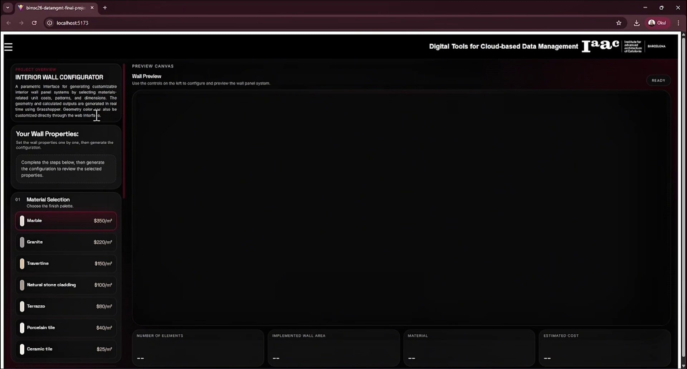
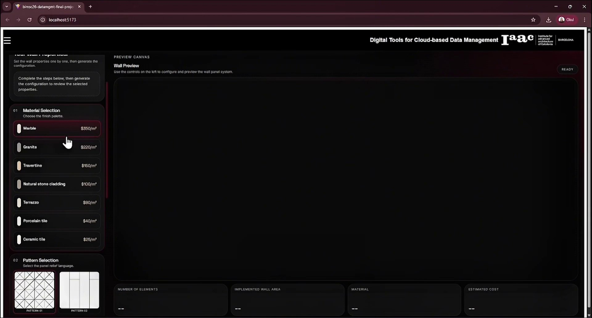
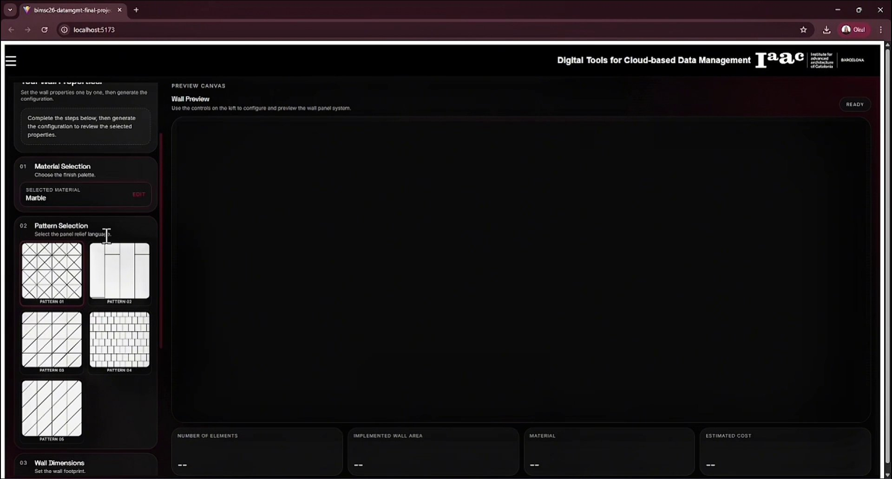
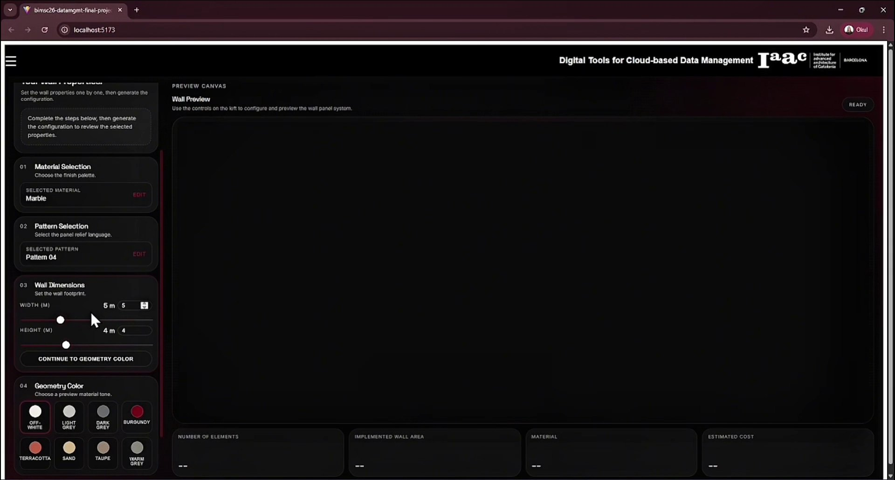
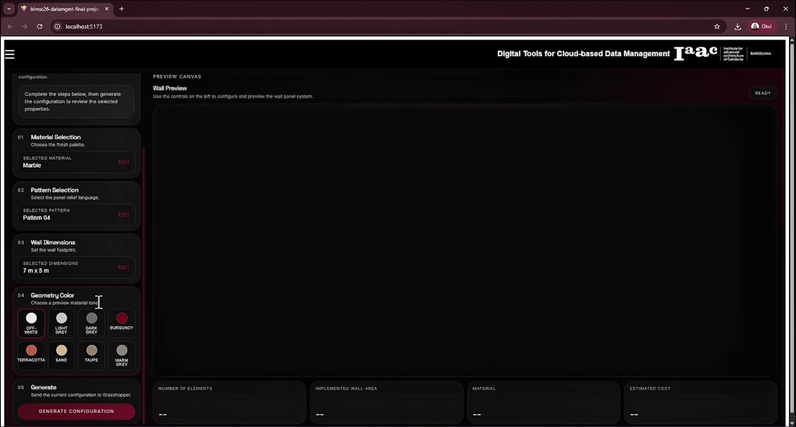

Interior Wall Configurator
Cloud Based Data Management · BIMSCA web-based parametric configurator for interior wall panel systems. Pick a material, a panel pattern, the wall size and a colour in the browser; a live Grasshopper definition running on Rhino.Compute through Hops builds the wall and returns a 3D preview with the number of elements, the wall area and an estimated cost, in real time and without any CAD.
-
Browser-baseda branded web app, no CAD needed
-
Rhino.Compute + HopsGrasshopper solved in the cloud
-
Real-time outputgeometry, area and cost update live
Cloud Based Data Management · BIM & Smart Construction semester · Faculty: Justyna Szychowska · Chuck Driesler · Sophie Moore · GitHub repository
The User Workflow
Five choices in the browser, one round trip to the cloud, one dashboard back. The selections are packed into object properties and sent to Grasshopper, which runs on Rhino.Compute through Hops; the geometry and the computed values come back to a Three.js viewer and the output cards.
Browser · web interface
- 01Open the web interface
- 02Select a material, unit cost per m² shown
- 03Select a pattern, one of five (LunchBox)
- 04Set the wall dimensions, width and height
- 05Choose the geometry colour for the preview
06 Cloud processing
Grasshopper on Rhino.Compute via Hops
- Read the input parameters
- Generate the wall panel geometry
- Apply the pattern logic
- Calculate the wall area
- Calculate the estimated cost
07 Output dashboard
- Wall preview in Three.js
- Number of elements
- Implemented wall area
- Material
- Estimated cost
- Summary of the selected parameters
The Interface, Step by Step
Each step opens in turn in the left panel and collapses once chosen, so the wall is always generated from a complete set of inputs. Drag to move through the screens, click to enlarge.






Four inputs, one priced wall
Computational Logic · Grasshopper on Rhino.Compute via Hops
The Grasshopper definition is exposed through Hops, so the browser talks to it like an API. It reads the width, height, pattern and material sent from the web app, lays out the panels in one of five predefined patterns built with the LunchBox plug-in, counts the elements, measures the implemented wall area and multiplies it by the unit cost of the chosen material. A 7 × 5 m marble wall in pattern 04, for example, comes back as 37 elements, 35.00 m² and an estimated $12,250.